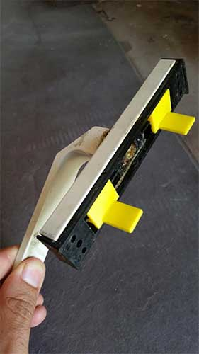

5 - 3D scanning and printing
Intro
The assignment of the fifth week was to use 3D scanning tools and print something in 3D.
3D scanning
There are different techniques to scan a 3D object mainly contact and optical. The optical one is faster and more used even if it can miss some details according to the technology used. At the Frosinone FabLab I used a Cubify Sense. It is an handheld device that, with a software can scan object and reconstruct a 3D model. It is an optical scanner anc has its own software. You have to take the sensor and move it around the object you want to scan. The more accurate and complete is your movement the better is you scan. For my assignment I decided to use a Microsoft Kinect sensor with Skanect software(trial version). It works very similar to cubify. The Kinect sensor can detect depht data and images having a 3D understanding of the scene. However, as with Cubify, you have to move the sensor around the target (or rotate the target) to have a 360° scan. The software then join together the different perspective achieved trying to make a model. At first you have to set up the area of your scanning and the subject. You can choose between object, body, room, half room. Then you start to record. The software gives you an heatmap to make you understand the distance to keep from the subject. It is important that you look at the box while scanning as it is a good reference to know if you are doing a good job. Remember to have enough space to move around your subject and that the Kinect wire (to connect to the pc) is not infinite :D (don't pull it or you'll break your pc!!!).
Skanect has a reduced accuracy in its trial version. I tried to scan some little objects but it cannot get many details and the result was not good. It showed better performances scanning people. So I start scanning myself turning around the camera but the result wasn't very good so I scanned a friend of mine. The problem with the Kinect is to keep the subject inside the bounding box of Skanect and try to cover all the angles (especially the negative ones). After recording there is the "reconstruction phase" where the software tries to make the model from the data acquired. However, even if I tried to be accurate the model had some holes so I used the "fill holes" function. This is one of the funzion that Skanect has to repair the model. I tested also the "watherthight" however it makes me loose too many details. However the low accuracy of Skanect made a model with very low details as you can see in the image below. I saved it in .obj format.
3D printing
To print a model I decided to make something useful form me. In my house I have a a broken window. There are two pieces of the closing mechanism that is broken (picture below) and I decided to model and print it to see if I can fix the window.
Using a caliper I took the exact measures and I used Rhino to make the model. I started from simple solid boxes, then I used a fillet trying to make the exact shape. I converted it into a mesh with the highest number of polygons, I checked that everything was closed (closed mesh) and exported the .stl file.
The printing part was more tricky. As I couldn't go to the Frosinone Fablab I choose to use a printer that is in my University. The printer is a BFB 3000 touch. However the printer's bed is curved and I had many problems.

So I used an Ultimaker 2 at FamoCose Makerspace. To make the GCODE Iused the Cura slicer. It has a very simple and intuitive interface with beginners and experts settings. However as I used cm in Rhino Cura made the models very small so I used a scale factor of 10. I placed the components flat on the build plate. As I have several overhangs I generated the supports with Cura (touching buildplate option). Then I set the fill desity to 100% as I want my pieces to be very resistant. I used a yellow PLA filament from Filoalfa 2,85 mm diameter.
I saved the gcode on the sd and I launched the print. Before I put some hairspray on the buildplate to ensure adhesion of the print.
The result was good and after a little bit of sandpaper I was able to put it inside the handle and for the window :D. The material is strong enough to survive to the mechanical stress.

Then I decided to try another printing technique, the stereolithography to print the scan I made with the Kinect sensor. I used a Form 1+ (SLA) hosted at FamoCose maker space in Rome. It was interesting as it was my veryfirst experience with that kind of printer. I used the preForm software to make the GCODE. It automatically orient the model in the way that it thinks it's better. However I changed the default inclination to avoid the supports be attached to the front of my model. To print I used the black resin from the form lab.
When the job was done I removed the print and I rinsed it with Isopropyl Alcohol (IPA) (for a tutorial have a look here ) and this was the result (I didn't remove the support because I like the print as it is :) ).
 Attribution, non-commercial, share alike.
Attribution, non-commercial, share alike.